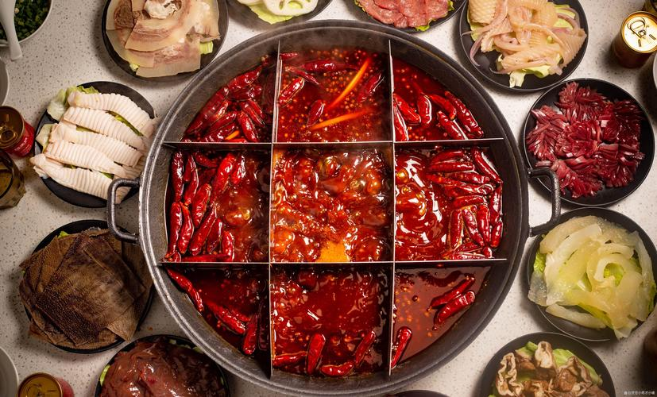
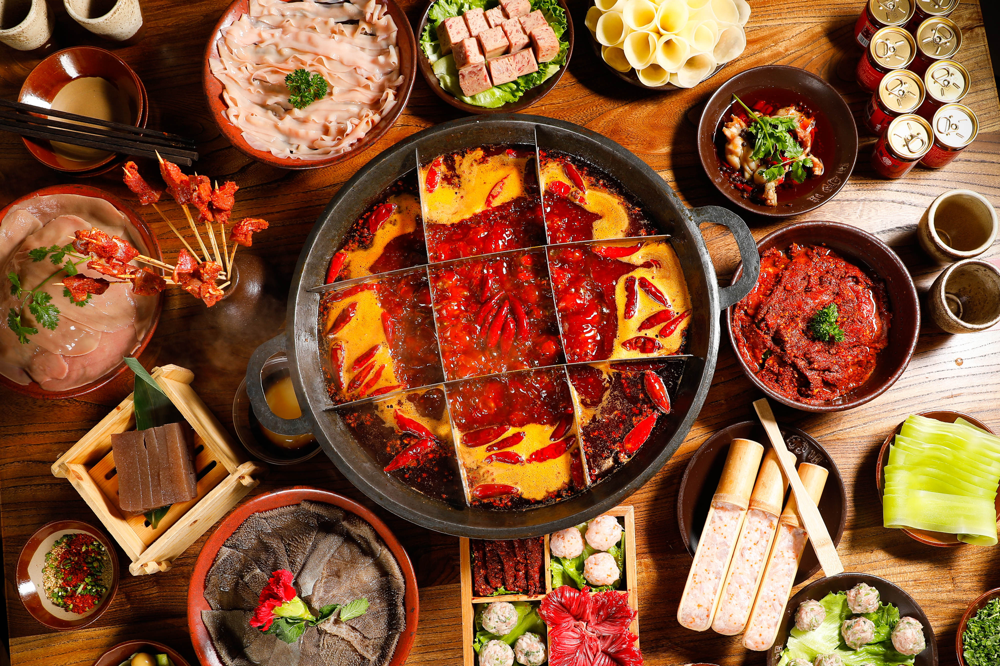
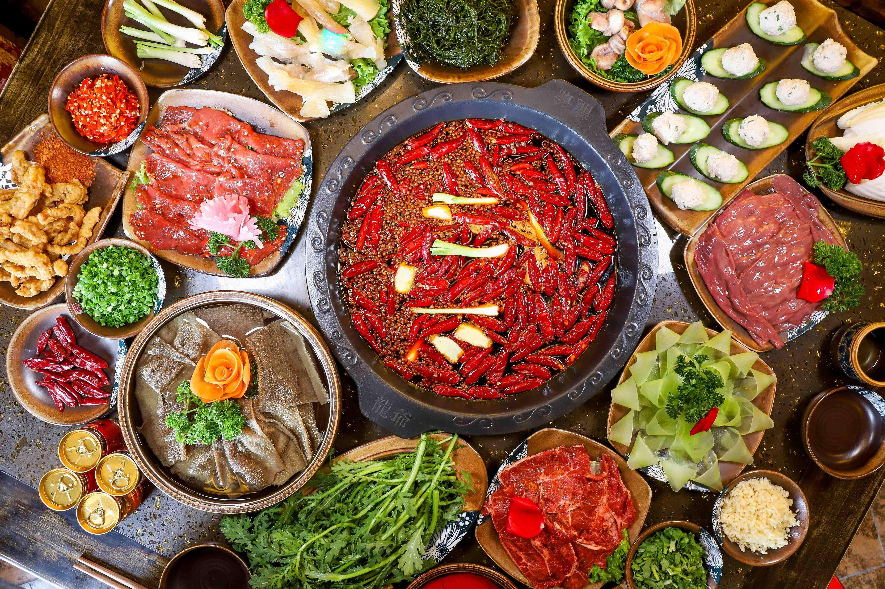

Key Features of Chongqing Hot Pot
- Spicy Broth: The signature feature of Chongqing Hot Pot is its intensely spicy broth, often bright red in color. The broth is infused with dried chili peppers, Sichuan peppercorns, garlic, ginger, and other spices, creating a complex and addictive flavor.
- Mala Sensation: The combination of chili heat and the tingling numbness from Sichuan peppercorns creates a unique "mala" sensation that is both thrilling and satisfying.
- Communal Dining: Hot pot is a social dining experience. Friends and family gather around the pot, sharing food and enjoying the interactive cooking process.
- Wide Variety of Ingredients: Diners can choose from a vast selection of ingredients, including thinly sliced beef, lamb, pork, seafood, tofu, mushrooms, leafy greens, and more. Each ingredient absorbs the rich flavors of the broth.
- Customizable Dipping Sauces: Alongside the hot pot, diners can create their own dipping sauces using condiments like sesame paste, garlic, cilantro, soy sauce, and chili oil.
Why is Chongqing Hot Pot Special?
- Cultural Significance: Hot pot is deeply rooted in Chongqing's culture and history. It originated as a meal for laborers along the Yangtze River and has since become a symbol of the city's vibrant food scene.
- Unique Flavor Profile: The "mala" flavor is distinct to Chongqing and Sichuan cuisine, offering a taste experience that is hard to find elsewhere.
- Year-Round Enjoyment: While hot pot is especially popular in winter, locals enjoy it year-round, often in air-conditioned restaurants to combat the heat of Chongqing's summers.
Tips for Trying Chongqing Hot Pot
- Choose Your Broth: If you're not accustomed to extreme spice, you can opt for a "yuan yang" pot, which divides the pot into two sections—one spicy and one mild.
- Start with Mild Ingredients: Begin with milder ingredients like tofu or vegetables to ease into the spicy broth.
- Cool Down with Drinks: Pair your meal with cooling drinks like iced tea, soy milk, or local beers to balance the heat.
- Ask for Recommendations: Don't hesitate to ask the staff for recommendations on popular ingredients or dipping sauce combinations.
Chongqing Hot Pot is more than just a meal—it's an experience that captures the spirit of Chongqing. Its bold flavors, communal atmosphere, and cultural significance make it a must-try for any visitor. Be prepared for a spicy adventure, and don't forget to enjoy the lively dining experience with friends or family!